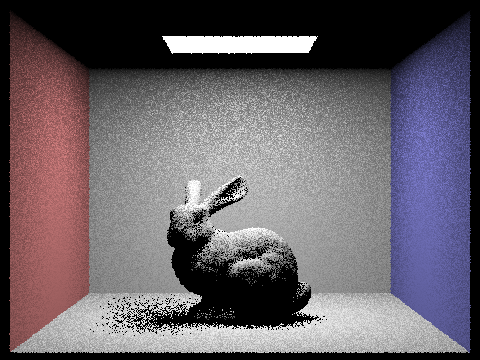

CS184/284A Spring 2025 Homework 3 Write-Up
Link to webpage: https://cal-cs184-student.github.io/hw-webpages-drsigma/hw3/index.html
Link to GitHub repository: https://github.com/cal-cs184-student/sp25-hw3-patientdonkey.git
Overview
In this homework, I explored the basics of ray tracing in C++ (which is really cool!). This involves the basics of ray casting which considers the intersection of rays with the geometric primitives in the scene. Using bounding volume hierarchy, the process of collision checking can be greatly accelerated. Next we explore the concepts of direct and global illumination, building a complete pipeline that can be used to render images with various specififications and realistic lighting conditions. Fianlly, we performed an exercise on adaptive sampling, which builds some intuition on the number of samples needed for different geometric complexities.Part 1: Ray Generation and Scene Intersection
For this part of the homework, I implemented several important functionalities for the ray tracer to work properly. The following sections explain in detail these individual functionalities.
Task 1: Generating Camera Rays
Here I implemented the function Camera::generate_ray() which is able to generate a ray which passes through a given coordinates in the image plane \((x,y)\).
A ray is defined by a point and a direction, following the equation \( \mathbf{r}(t) = \mathbf{o} + t \mathbf{d}\). To implement this, I first transformed the input coordinates
into the camera space using the following transformation which is obvious from the given scketch:
\[
\begin{bmatrix} x' \\ y' \end{bmatrix}
=
\begin{bmatrix} 2tan(0.5hFOV)&& 0 \\ 0 && 2tan(0.5vFOV)\end{bmatrix} -
\begin{bmatrix} tan(0.5hFOV) \\ tan(0.5vFOV) \end{bmatrix}
\]

Task 2: Generating Pixel Samples
The implementation of PathTracer::ray_trace_pixel() is quite simple, where I just unformly sample n_samples coordinates
using the grid sampler provided. This allows me to get the sample positions in the image coordinates, which then by calling the function generate_ray
becomes rays that point in random directions within the same pixel. From here I computed the radiance along each of the rays and averaged them. This result
is then the Monte Carlo estimated value of the integrated radiance, since we are using uniform samples from 0 to 1.
Task 3: Ray-Triangle Intersection
For this task, I implemented functions in triangle.cpp that are used to check intersection of a triangle with a given ray.
Assuming that the triangle is already in the correct winding order with known vertices v1, v2, v3, I used the equations
\[
t = \frac{(v_1-o)\cdot N}{d\cdot N}
\]
\[
N = (v_2 - v_1)\times(v_3-v_1)
\]
where N is the face normal of the triangle. An intersection is only valid if \(t_{min} \leq t \leq t_{max}\), where we initialize
these bounds to the clipping planes while the \(t_{max}\) gets updated for each intersection found on the ray so that we are always logging
the closest intersection. Furthermore, the intersection must be inside the triangle. For this check I used the Barycenteric coordinates and varified
that each of the three coordinates are between 0 and 1, otherwise we consider it as no intersection.
Task 4: Ray-Sphere Intersection
The sphere intersection check is implemented similarly, by solving the quadratic equation \(at^2 + bt + c = 0\), with \(a = d\cdot d\),
\(b = 2(o-c) \cdot d\), and \(c = (o-c) \cdot (o-c) - r^2\). Here the number of solutions depends on the value of the discriminat, so only if
\(b^2 - 4ac \geq 0\) will there be at least one solution. I first implemented the function Sphere::test() which finds the solutions for t
if they exist. In the case that a solution exists, we still need to check which is the closest intersection point that is between the \(t_{min}\) and \(t_{max}\)
values. Therefore the closer solution is checked first, then the farther solution. If neither of those are within the bounds, then no intersection is
considered to be found.
By completing the implementations so far, we can render some images of the provided models using the sampled rays. These examples below show that both the sphere and triangle implementations are correct for these object to appear with the correct shapes. However, I had to choose very simple shapes since these take a while to render.
|
|
|
Part 2: Bounding Volume Hierarchy
In this part of the assignment, I implemented the bounding volume hierarchy to accelerate the ray casting process. First a BVH is constructed for a given scene, then we implement the check for bounding box intersections. Finally the hierarchy is traversed and rays are only checked for intersections within relevant bounding boxes. The following subsections detail this process.
Task 1: Constructing BVH
The BVH starts with a node which points to the bounding box that encloses all the given primitives.
Next, the implemented algorithm checks for the number of primitives in the scene, and if there is less
than a threshold number of primitives then a leaf node pointing to the start and end primitives are simply
constructed. If a split is required, I first computed which axis of the bounding box is the longest, then
sorted all the primitives according to that axis. I then get the median primitive and make the split. This
ensures that the number of primitives in each bounding volume is about the same. Recursion is used to construct
the left and right bounding volumes by calling construct_bvh() again.
As a result, I can check my work using the cow model below. The bounding box appears to be smaller at places where the mesh is dense, since I am splitting at the median object. The split also happens along the longest axis as expected.
|
|
|
|
Task 2: Intersecting Bounding Box
Next a function for checking bounding box intersection with a given ray is implemented. I used the equation \(t = \frac{p_x - o_x}{d_x}\) where the same is done for each of the three axis, and I use the two planes of the bounding box on that axis to get two values \(t_{min}\) and \(t_{max}\) for each axis. Next, I check for the largest \(t_{min}\) and smallest \(t_{max}\) accross the three axis to find the hit points on the bounding box. However, in the case that \(t_{max} < t_{min}\) after this operation, it means the ray misses the bounding box entirely.
Task 3: Intersecting the BVH
Finally, with every given ray we use the BVH traversal to check for intersections efficiently. We use a similar recursion structure as when we were creating the BVH. First, we check to see if the ray intersects with the bounding box. This eliminates the need for doing any intersection checks in irrelevant bounding volumes. If the ray passes through the bounding box, recursion is called on the internal nodes and each primitive inside a leaf node is checked for intersections. The closest intersection is always stored.
After the BVH implementation, the rendering process is sped up by a lot. See the three examples shown below with increasing number of geometric primitives. If BVH is not implemented, each ray is checked against all of the mesh primitives, which makes the rendering speed largely dependent on the size of the mesh. However, with the BVH these examples all finish rendering within fraction of a second using the exact same settings.

|
|
|
| Name | Number of Primitives | Rendering Time without BVH | Rendering Time with BVH | Cow | 5856 | 86s | 0.0328s |
|---|---|---|---|
| Cornell Box Bunny | 28588 | 601s | 0.0361s |
| Max Planck | 50801 | 1119s | 0.0399s |
Here are a few more examples that cannot be rendered (due to my limited patience) without BVH.
|
|
|
|
Part 3: Direct Illumination
In this part, I implemented several building blocks of direct illumination. Specifically, the zero and one-bounce illumination components are added to the overall global illumination, and we explore both uniform and importance sampling for one-bounce illumination. The essence of calculating the radiance at each point is by solving the reflection equation \[L_r(p,\omega_r) = \int_{H^2}f_r(p,\omega_i \rightarrow \omega_r) L_i(p,\omega_i)cos\theta_i d\omega_i\] and using the Monte Carlo method for numerical integration, this becomes \[\frac{1}{N}\sum^{N}_{i=1}\frac{f_r(p,\omega_i \rightarrow \omega_r) L_i(p,\omega_i)cos\theta_i}{p(\omega_i)}\]Task 1: Diffuse BSDF
The BSDF \(f_r(p,\omega_i \rightarrow \omega_r)\) is different for every material. For the diffuse case, this means the reflected light scatters equally in all directions of a hemisphere. As a result, the BSDF is independent of the incident and reflected light angle. Following the reflectance equation: \[L_r = \int_{H^2}f_r L_i(\omega_i)cos\theta_i d\omega_i\] and using the Monte \[L_r = \pi fr Li\] \[fr = \frac{L_r}{\pi L_i}\] For this we implemented a function to return the BSDF of a diffuse material based on the reflectance \(\rho = \frac{L_r}{L_i}\).Task 2: Zero Bounce Illumination
Zero bounce radiance means in ray tracing, we only add the rendering effect if the material itself is emitting light. As a result, for a given sampled ray casting from the image pixel to the scene and intersecting the scene at a known location, we simply have to check if the intersected object is emitting light. If so, its radiance is added to the global illumination. Once we implemented this, the Cornell Box bunny model looks like the image below, where only the ceiling light appears in the scene since it's emitting light.Task 3: Direct Lighting with Uniform Sampling
For the uniform sampling method, we are casting rays from the known hit point towards a random direction on a hemisphere, then we follow the steps to get the total radiance using Monte Carlo:
- Generate a random incident ray \(\omega_i\) on the hemisphere centered at the hit point.
- See if this ray intersects with another object in the scene, if so get the emission \(L_i\) at the hit point.
- Compute \(fr\) using the two known incident and reflected rays in object frame.
- Accumulate the contribution \(L_i cos\theta_i fr\), here we normalize with a factor pf \(\frac{2 \pi}{N}\)
As a result, the total reflected radiance due to one-bounce from light source is computed. Finally, from this point onward we add the contributions of zero
and one-bounce illumination using L_out = zero_bounce_radiance(r,isect) + one_bounce_radiance(r,isect);. A resulting image using this method is shown
below, where there are visibly quite a lot of noise in the picture, even though we are using a high sampling rate of 64 per pixel and 32 per area light.
Task 4: Direct Lighting with Importance Sampling
One way to effectively reduce noise in direct illumination is through importance sampling, where we only sample rays that would go through the light objects. For this we follow the following steps to perform the Monte Carlo integration:
- Generate a random incident ray \(\omega_i\) towards a light source. For each area light object we create
ns_area_lightnumber of samples, and for point sources only 1 sample is needed. - See if this ray intersects with another object in the scene, if not then we compute the contribution.
- We compute the light contribution similarly as above, except our normalization constant now depends on the resutling pdf of the sample.
- For area light we additionally divide by the number of objects.
As a result, we can render images with less noise using the same number of samples. Examples below show a comparison between the two sampling methods. Notably the noise level is much lower when using importance sampling, and also in hemisphere uniform sampling it is not possible to render scenes with only point light, since the pdf of hitting the light source at that particular point is zero.
|
|
|

|
|
|
|
|
Focusing on the CBbunny scene, we can further analyze how importance sampling effectively reduces the noise
level in rendering. The following images are generated using 1 sample ray per pixel, but with increasing light ray
number l. Even though some noise persists in the scene due to the limited number of sample rays, the increase in
light rays significantly helps with reducing noise in the scene compared to the uniform sampling method, since each
light ray is pointing towards a light source, therefore resulting in a non-zero contribution to the resulting radiance.
|

|
|
|
|
|
Part 4: Global Illumination
Task 1: Sampling with Diffuse BSDF
To implement global illumination, we first start with a helper function DiffuseBSDF::sample_f that lets us compute
the BSDF with a sampled ray instead of a given ray. To do this we simply sample a direction around
the hemisphere. This helper function is later used in the global illumination recursion.
Task 2: Global Illumination with N Bounces
To implement the global illumination algorithm with a fixed number of bounces, we implement the function
at_least_one_bounce_radiance() in the ray tracing pipeline.
When every sampled ray is generated for the first time, we now assign a depth value equal to the maximum
ray tracing depth value to keep track of how many bounces of light we are recording. The logic of this algorithm is roughly as follows:
- If
depth == 1, end the recursion and output the single-bounce radiance. - Generate a new ray to represent a bounce, set the ray depth to be one less than the input ray depth.
- Check for intersection with the scene for the new ray. If intersection happens, call the recursion.
- Depending on if we are trying to accumulate light for different bounces, output the resulting radiance.
As a result, we now have the ability to output the rendering results for differenet numbers of bounces of light, as well as outputting the resulting rendering effect only due to specific bounces. The images below show a sample scene being rendered with different bounces of light, with and without accumulation, all rendered with 1024 samples per pixel. It is apparent through these images that the lower level bounces offer much more contribution to the global illumination, especially the first two bounces. After that, starting with the third bounce for this example, the changes in lighting is rather insignificant.
|
|
|
|
|
|
|
|
|
|
|
|
|
|
|
|
|
|
Additionaly, the image below shows a comparison between only direct and only indirect lighting. While direct lighting contributes the most amount of brightness in the scene, indirect lighting is needed to give realistic rendering results, for instance accounting for the brihgtness of object surfaces opposite to the light source, instead of having shadows that cover these regions completely.
|
|
|
|
Task 3: Global Illumination with Russian Roulette
Finally, we implement the Russian Roulette to make the Monte Carlo estimator unbiased. The implementation in this case is simple, we only need to add an additional termination condition before performing additional resursion, to terminate the resursion with a probability of 40% using a random number sampler. As a result, we can set large values of ray depths and still have the program terminate eventually. The images below show example rendering with differenet depths using the Russian Roulette.
|
|
|
|
|
|
|
|
Finally, we show how the number of samples per pixel affects the noise level in global illumination.
|
|
|
|
|
|
|

|
|
|
Below are just some more examples of models rendered with global illumination.
|
|
|
|
Part 5: Adaptive Sampling
Finally, we add an adaptive sampling method. The goal of using this method is such that each pixel do not have to be rendered with the same number of samples as long as it converges. To do this we need to also keep track of the statistics of the collected light from sampled rates so far. The algorithm is as follows:
- For every ray radiance calculation, also compute the resulting scalar illuminance \(E_k\) and update \(s_1 = \sum_{k=1}^n E_k\) and \(s_2 = \sum_{k=1}^n E_k^2\).
- For every
samplesPerBatchsamples, compute the statistics so far using \(\mu = \frac{s1}{n} \) and \(\sigma^2 = \frac{1}{n-1}(s_2 - \frac{s_1^2}{n})\) - After computing the statistics, check the convergence condition \(1.96\frac{\sigma}{\sqrt{n}} \leq \text{maxTol} \times \mu\)
- If the convergence condition is met, break the loop early. Otherwise accumulate up to the maximum number of samples before returning.
Using the adaptive sampling method and a maxTol value of 0.05, we get the following results, where blue in the sample rate
visualization represents few samples and red represents more samples. This shows that signifcantly more samples are used to render intricate geometries,
whereas very few samples are generally needed to render walls and backgrounds.
|
|

|
|
|
|

|
|